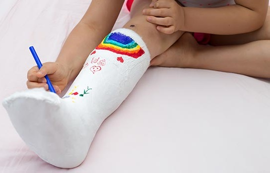
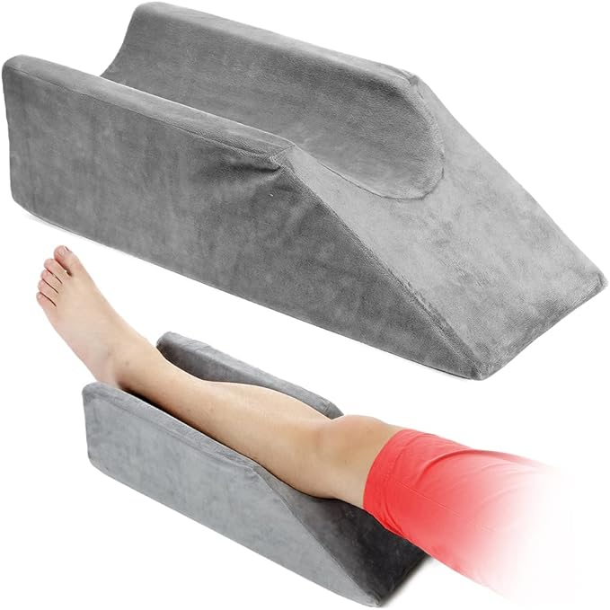

Como Socorrer uma criança vitima de fratura
Introdução
Fraturas em crianças são lesões comuns que podem ocorrer durante brincadeiras, esportes ou quedas. Saber como agir rapidamente e corretamente pode reduzir a dor da criança e prevenir complicações. Este tutorial irá guiá-lo pelos passos essenciais para socorrer uma criança vítima de fratura.
Passo 1:
Avalie a Situação
- Mantenha a Calma: Acalme a criança e assegure-se de que ela não tente se mover desnecessariamente.
- Verifique o Ambiente: Certifique-se de que o local esteja seguro para evitar mais acidentes.
Passo 2:
Identifique os Sinais de Fratura
- Dor intensa no local da lesão
- Inchaço e hematomas
- Deformidade visível
- Dificuldade ou incapacidade de mover o membro afetado
- Sensação de formigamento ou dormência

Passo 3:
Imobilize a Área Afetada
- Não tente realinhar o osso ou empurrar uma fratura exposta de volta para dentro.
- Use Talas: Improvise uma tala usando materiais rígidos como tábuas, revistas enroladas ou qualquer objeto que possa manter o membro imobilizado. Prenda a tala com ataduras, tiras de pano ou faixas, mas sem apertar demais.
- Imobilização Adicional: Se a fratura for no braço, pode-se usar uma tipóia para manter o braço elevado e imóvel.
Passo 4:
Aplique Gelo
- Reduza o Inchaço: Aplique gelo envolto em um pano na área lesionada por 20 minutos a cada hora, evitando o contato direto do gelo com a pele.

Passo 5:
Eleve o Membro
- Diminua o Inchaço: Se possível, mantenha o membro afetado elevado acima do nível do coração da criança para ajudar a reduzir o inchaço.
Passo 6:
Procure Atendimento Médico
- Ligue para os Serviços de Emergência: Se a fratura for grave, como uma fratura exposta ou que cause deformidade significativa, chame imediatamente os serviços de emergência.
- Dirija-se ao Pronto-Socorro: Para fraturas menos graves, leve a criança ao pronto-socorro para avaliação e tratamento profissional.

Passo 7:
Mantenha a criança confortavel
- Ofereça Conforto: Converse com a criança, mantendo-a calma e distraída. Utilize almofadas ou cobertores para apoiar o membro lesado de forma confortável.
- Controle a Dor: Consulte um médico sobre a administração de analgésicos adequados para aliviar a dor.
Conclusão
Saber como agir diante de uma fratura pode fazer uma grande diferença no bem-estar e na recuperação de uma criança. Este guia oferece passos práticos para socorrer uma criança vítima de fratura, mas lembre-se sempre de procurar ajuda médica para um tratamento adequado. A prevenção é fundamental para evitar fraturas, por isso, tome medidas para garantir a segurança das crianças durante suas atividades diárias.